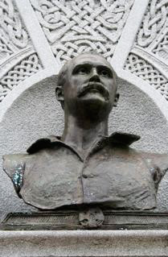
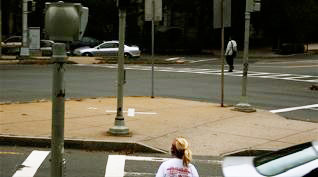
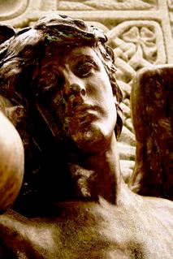
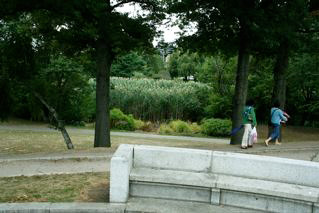

submissions
The Statue of John Boyle O'Reilly
Francis Raven

At the edge of the Fens, in Boston, on the corner of Fenway and Boylston Streets (see map), there is a bust of John Boyle O'Reilly (1844-1890). O'Reilly is always characterized as a "poet, patriot, and journalist." This is what the plaque says. His works include “At Best,” which begins:
“HE faithful helm commands the keel,
From port to port fair breezes blow;
But the ship must sail the convex sea,
Nor may she straighter go.”
Irishheritagetrail.com proclaims that O'Reilly “was the most influential Boston Irishman of the 19th century. Born at Dowth Castle in County Meath, he was a printer's apprentice and later joined a British Army regiment as a way of spreading Fenianism among British soldiers. In 1866 he was sentenced to a penal colony in Australia for crimes against the Crown, but made a daring escape on a New Bedford Whaler named Gazelle. He arrived in Boston in 1870, and for the next 20 years was recognized as a powerful spokesman for the downtrodden, at times single-handedly bridging the gap between people of various races, creeds and nationalities.” He sounds like the type of person
we could use more of today.
He is facing a reasonably busy intersection, which tourists often find confusing.

On the other side of the statue is a scene that consists of three individuals. At first it is unclear who they are. The plaque under the scene reads, “Poetry and Patriotism Give of Their Laurel and Oak From Which Erin Weaves a Wreath for Her Heroes.” I'll let somebody else describe the scene depicted. In 1995, the band Hazel toured America. On Saturday, March 18th of that same year they were in Boston. Luckily, they kept a diary, in which they wrote, “Poetry and Patriotism are a couple of tired-looking boys with, respectively, a lyre and a helmet to differentiate them; Erin is a young beauty; and a passerby some weeks before has twined a red rose into the fingers of each of the charming three.”

What the other side of the statue looks out upon is even more interesting: a set of benches, upon which homeless people often sleep (there are no impenetrable armrests to prevent slumber), the reeds of the Fens (within which homosexual men have sex), Muddy River, and a little further on, the Fenway Victory Community Gardens (which consists of small garden plots, individually planted). I don't want to take pictures of the homeless people who are being looked at.

The American sculptor Daniel Chester French designed the statue. French is best known as the sculptor of the seated Lincoln of the Lincoln Memorial (1922). The architecture firm in charge of the project was Walker and Kimball “the Boston firm that led the design of the 1904 St. Louis World's Fair.” That is, this memorial was a high profile commission. In the June 21st, 1896 New York Times announcement of the statue's dedication, its prominence is noted by the presence of Vice President Adlai Stevenson Sr. The article continues, “The jubilee overture, was sung by 150 singers of the St. Cecilia and Apollo Clubs, together with fifty members of the symphony orchestra…The crowning of the O'Reilly figure with a laurel wreath was done by Louise Chandler Moulton.” In case readers were left
wondering, the unsigned article declares that the “ceremonies were impressive.”
Both the statue and the feelings it evokes are still impressive though the context has changed and made these feelings strange much as Benjamin's dialectical image is supposed to do. As he writes in The Arcades Project, “Every present day is determined by the images that are synchronic with it: each ‘now’ is the now of a particular recognizability. In it, truth is charged to the bursting point with time. It is not that what is past casts its light on what is present, or what is present its light on what is past; rather, image is that wherein what has been comes together in a flash with the now to form a constellation.”